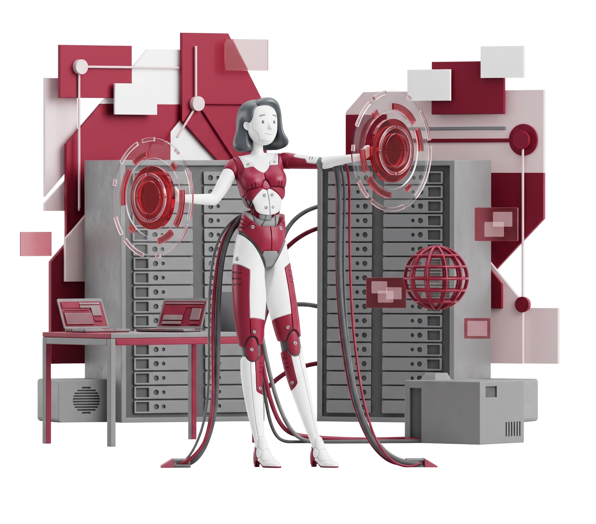

Consultancy services are a type of professional service that provides advice and guidance on a specific topic. Consultants are typically experts in their field and can provide valuable insights and recommendations to help clients achieve their goals.
Optimize cloud environments, modernize infrastructure, and build resilient architectures that support long-term business growth.

Develop data-driven strategies using AI, analytics, and machine learning to improve decision-making and accelerate innovation.
Improve application architecture and streamline DevOps practices to deliver secure, scalable, and high-performing software.
Protect critical systems with security assessments, governance, and business continuity planning to ensure uninterrupted operations.